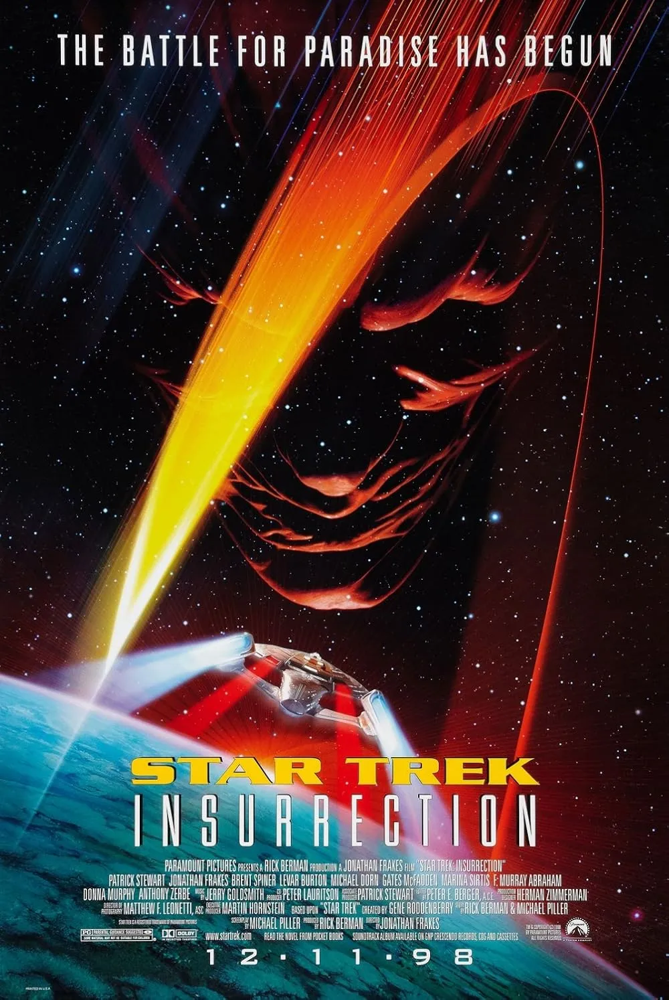
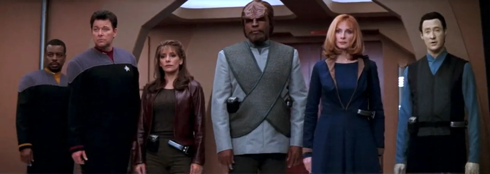
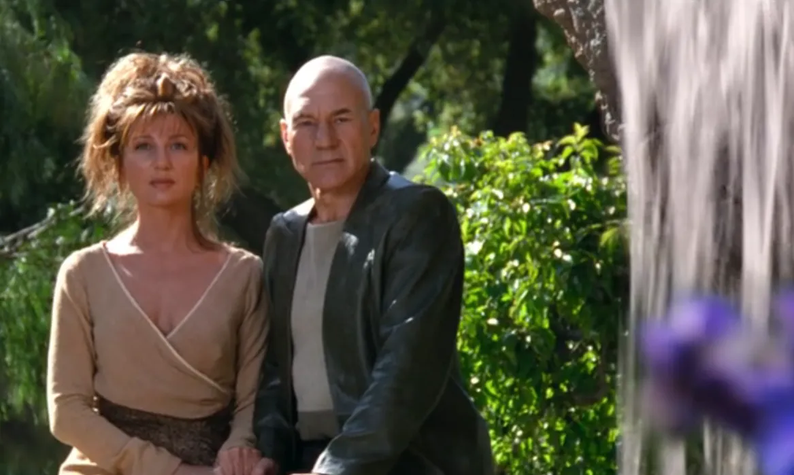
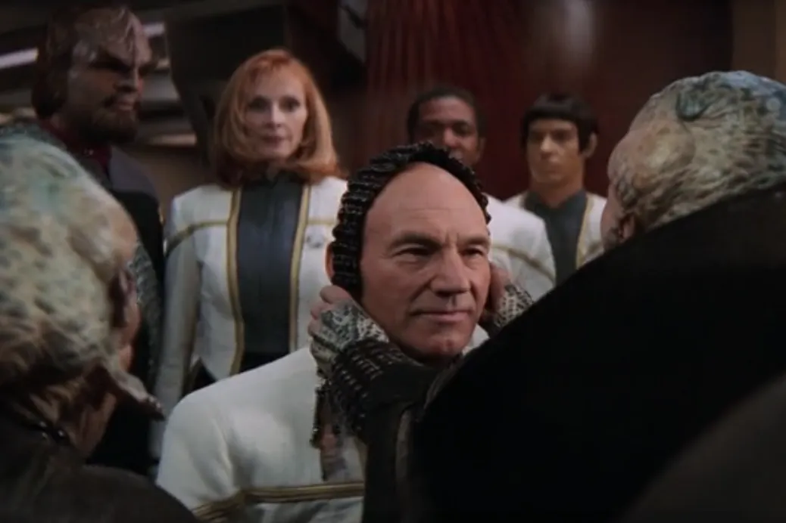
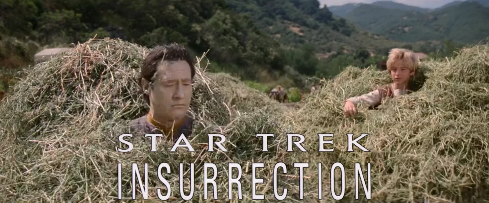

@c6reviews.
@c6reviews.Films
home
| Star Trek: Insurrection | |
|---|---|
 |
|
| Film number: | #9 |
| Release date: | December 11, 1998 |
| In-universe year: | 2375 |
| Universe Timeline Go to full timeline ➡︎ | |||
|---|---|---|---|
| 2363 | |||
| 2364 | Star Trek The Next Generation (TNG) |
||
| 2365 | |||
| 2366 | |||
| 2367 | |||
| 2368 | |||
| 2369 | Star Trek Deep Space Nine (DS9) |
||
| 2370 | |||
| 2371 | Star Trek Voyager (VOY) |
Generations | |
| 2372 | |||
| 2373 | First Contact | ||
| 2374 | |||
| 2375 | Insurrection | ||
| 2376 | |||
| 2377 | |||
| 2378 | |||
| 2379 | Nemesis | ||
| 2380 | Star Trek Lower Decks (LOW) |
||
| 2381 | |||
| 2382 | |||
| 2383 | Star Trek Prodigy (PRO) |
||
| 2384 | |||
| 2385 | |||
| 2386 | |||
Star Trek: Insurrection is the ninth Star Trek film, and it is the third of four films to star the cast of the TV series Star Trek: The Next Generation. It takes place in the year 2375, two years after the previous film.
Released in 1998, the film was sometimes labeled as Star Trek IX, especially in some old box sets containing several Trek films, even though that was never officially part of the title. This designation is increasingly rare today.
Star Trek: Insurrection tells a strange little story that is really not connected to anything else in the Trek universe. It features a new villain-race that has never been seen before and won't be seen again. It takes place on a planet that has never been seen before and won't be seen again, with another race of people never seen before or again. The planet exists in a region of space that is difficult to navigate, facilitating its exclusion from all previous and future stories. The planet has magic rings that work like a fountain of youth, which will never be mentioned again despite their potential value as a miracle of medical science. To sum it up, Starfleet has partnered with the morally-questionable Son'a to collect the delicious ring juice from this planet, but there's 600 people living there that they'll have to forcibly relocate first. Picard takes umbrage with this and disobeys orders to protect the people on the planet. The end.
As with most Trek films, you can enjoy this story without having seen any prior Star Trek movies or TV shows. This is especially true of Insurrection, which has been described as “an hour-and-43-minute episode”. Much like the episodic nature of the TV series, there is no prior knowledge needed before delving into this story, and this story will not provide any needed knowledge for future stories. It is very much self-contained.
Strict Chronology: This film comes after the series Star Trek: The Next Generation and the first two Next Gen films, so I'm going to at least recommend that you watch the films in order. Other than that, have at it!
| Suggested Prerequisite Watch List | |||
| Series | Episode | Title | Description / Relevance |
|---|---|---|---|
| FILM | #7 | Star Trek Generations | First TNG film |
| FILM | #8 | Star Trek: First Contact | Second TNG film |
One-sentence summary: “That time that someone threw the Prime Directive out the window so they could snog a villager on Ba'ku.” — Captain Liam Shaw
[in-suh-rek-shuhn] /ˌɪn səˈrɛk ʃən/
NOUN
: an act or instance of revolting against civil authority or an established government
As mentioned above, this film has been called “an hour-and-43-minute episode” because much of it just feels like a weekly story from the TV series, lacking the drama, intrigue, and gravitas of a feature film. I would argue that there is nothing in this film resembling an insurrection, so the title is a misnomer at best, and intentionally misleading at worst. Sure, there is the representative moment when Picard removes his Starfleet rank pips, signifying his disagreement with Starfleet in these matters and his intention to fight against, rather than for, the Federation. But that moment is quickly forgotten when his fight turns out to be solely against Ru'afo and the Son'a, and not against Starfleet. In fact, while the Federation may have originally intended to cooperate with the Son'a on this morally-dubious plan, the admiral has a change of heart, at which point the Son'a take matters into their own hands. So, at that point, the Son'a are working against Federation interests and plan to assault a Federation planet, so one could argue that Picard is now fighting on behalf of his government, not against it. Thus, no insurrection.
One notable thing in the timeline is that this story happens during the Dominion War from the series Deep Space Nine, and yet this film takes place in a quiet nook of the galaxy, far separated from the war which likely would have been a much more fascinating epic to explore. Further, the Enterprise‑E, one of the most advanced ships in the fleet, isn't on the front lines of the war. Instead, she's here having a posh little party for a newly-inducted member of the Federation, is asked to resolve a minor territorial dispute, and instead flies off to a tiny pocket of space to serve space-justice. Even more disappointing is that in an early interview during pre-production, producer Rick Berman indicated that John de Lancie's Q would be in the film. That could have been another thread that would have made for a truly interesting film but, alas, all we got is this snooze-fest.
Instead, we open with Data going haywire on some quaint farming planet, firing his weapon at a nearby observation post manned by the Federation and the Son'a, thus destroying the post's camouflage. The locals are surprised by its sudden appearance. We then head over to the Enterprise‑E, where the senior staff are donning their brand-new, spiffy white dress uniforms. They look great! Worf appears and begins explaining what he's doing on the ship instead of being at Deep Space Nine, but – hilariously – the writers figured the reason really didn't matter at this point, so Worf's conversation is literally drowned out by others talking. During a diplomatic reception, the crew receives word about Data's malfunction, so they decide to lend a hand.
Next, we visit one of the Son'a ships. They're in some sort of salon where they're getting their... uh, face skin stretched and stapled. If the salon looks at all familiar, it's probably because the set is a redress of the Kyrian museum in the Voyager episode VOY 4x23: Living Witness. The lead Son'a, Ru'afo, is eager to finish up whatever they're doing on the planet where these Ba'ku live, but the Admiral wants to do things by the book. And, so, we've met our film's antagonist and slightly-more-reluctant antagonist. Ru'afo wants to destroy Data and apparently Dougherty approved that plan, so I guess we're forgetting again that, machine or not, Data is a Starfleet officer whose rights have been adjudicated to be just as valid as those of any other Starfleet officer (see: TNG 2x09: The Measure of a Man). So, this is essentially the same as the admiral authorizing murder.
Well, the Enterprise crew manage to safely capture Data, but they find out the deep, dark secret about why Starfleet and the Son'a are so interested in this world: they want the planet's sweet, sweet ring juice that is the proverbial fountain of youth. And so, while the rest of the Federation is in a life-or-death battle against the Dominion at Cardassia Prime probably, Picard goes on a little stroll with Anij to learn more and flirt a bit. Okay, to be fair, we don't know exactly when this film takes place with regard to the Dominion War. There are no stardates given or any other reference points that can help to narrow it down. This movie was released between the DS9 episodes DS9 7x09: Covenant and DS9 7x10: It's Only a Paper Moon, which was at the height of the war. Still, it's anyone's guess exactly when this takes place, and opinions online contradict and differ depending on who you ask.
And so, the Son'a plan to take the Ba'ku off the planet by force, and Picard intends to defend them. Various action scenes ensue, both on the planet and in space. Riker flies the Enterprise with a joystick and Worf fires a 24th-century bazooka at some people. Neat, I guess! Eventually, we get the big reveal that the Ba'ku and the Son'a are the same race, and we have the big final battle to stop the big deadly collector thingy from killing everyone on the planet. Fight, fight, fight, big explosion, the end.


- Despite having nothing to do with the Dominion War, the film does mention it a few times in passing: Riker explains that they've been asked to settle a minor dispute because the diplomatic corps is busy with the Dominion negotiations. Picard also mentions the Federation's losses to the Borg and the Dominion while in the turbolift on the way to the reception. Later, in a single line that is easy to miss, Riker reads a report that the Son'a produced mass quantities of ketracel-white, which is the narcotic used by the Dominion to keep the Jem'Hadar under control.
- In a reverse-reference, the Son'a are mentioned only once in dialog in DS9 7x17: Penumbra when Weyoun orders Damar to divert ships to protect a Son'a outpost on Devos Two.
- Visible in several scenes in Picard's ready room, draped over the back of his office chair, is the tapestry given to him by the Mintakans in TNG 3x04: Who Watches the Watchers. That episode also dealt with the consequences of observing another culture from a duck blind.

👍 New Dress Uniforms — Finally! Dress uniforms that aren't literal dresses! Look, I'm not trying to apply 21st-century gender norms onto 24th-century clothing, but the previous dress uniforms were a little silly, weren't they?
🤷♂️ The Captain's Yacht — The concept of the Captain's Yacht – a large auxiliary vessel mounted to the ventral side of the saucer section of a Starfleet ship – goes back to the Enterprise‑D. It was always part of the design specifications, but it was never seen, used, or even talked about in The Next Generation. Think of how fascinating it would have been to see it in action, as a support craft for the Enterprise, used in friendly diplomatic missions and dire battle scenarios alike. Well, that never happened, so the use of the Captain's yacht here, in a single mission, on a new ship we've only seen in one previous movie... well, it's just not as fascinating of an idea. The yacht on this mission does not serve any special, impressive purpose that any regular shuttlecraft couldn't have fulfilled, so its use here is pretty unimpressive.
👎 Lame one-liner comedy relief — Data's “flotation device” and “boob” jokes are pathetic.
👎 Manual Steering Column — give me a break. A massive starship driven by a joystick? Isn't that a little insulting to every helmsman ever?
🤷♂️ Everything Else — There just isn't anything else unique or even notable that is worth giving a thumbs-up or a thumbs-down to, and that probably says more about the film than anything else.

- Are those cloaking suits a breach of the Treaty of Algeron, where the Federation agreed never to develop cloaking technology? Eh, maybe they're on loan from the Son'a.
- The crew of the Enterprise don their white dress uniforms and then take a turbolift ride from Deck 9 to Deck 10. One deck. If you watch the little animation on the back of the turbolift, Deck 10 is apparently a few decks up and significantly more aft than their point of origin. Also, the two animations on the display are out of sync.
- Troi says “yuck!” after kissing Riker, claiming that she's never kissed him with a beard before which is... just not true.
- Data opens a dam to significantly reduce the water level in the lake, revealing the cloaked vessel. And yet, there's a dock with a boat still sitting at the new water level.
- Shortly thereafter, they paddle a boat up to the ship and take one step up into the open hatch. After being attacked, Anij falls out of the hatch several meters to a now-even-lower water level. Picard and Data jump in after her a little while later.
- Picard says “Computer, end program, decloak the vessel,” which... works. Why would that work? Is that a Federation ship that accepts his command codes? Again, I guess the cloak must belong to the Son'a, I'm sure that cloaking tech won't be forgotten about later in the episo–– um, movie, when it would be really convenient.
- “Can anyone remember when we used to be explorers?” — Picard

| My rating: | 4 | FINAL SCORE 4.7 |
|
| SF Debris rating: | 3 | ||
| Ex Astris Scientia rating: | 7 | ||
| Rotten Tomatoes “Tomatometer”: | 5.5 | ||
| Normalized IMDb rating: | 4.9 | ||
| Star Trek: Brief Disagreement |
Next movie
This is the third of four movies featuring the Next Generation cast. Continue watching their story in Star Trek Nemesis.
TNG Origins
If this film interested you and you haven't seen the TV series yet, you might want to go back and watch Captain Jean-Luc Picard and his crew in Star Trek: The Next Generation.